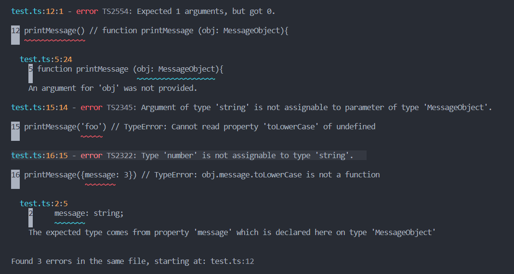

What is Domain-Driven Design?
- Domain-Driven Design (DDD) is a software development approach focusing on modeling complex software solutions based on the business domain.
- DDD emphasizes collaboration between technical and domain experts to create a shared understanding of the domain.
- It aims to align the software design with the business needs and goals.
Core Concepts of DDD
DDD introduces several key concepts to model the domain effectively:- Entities: Objects that have a distinct identity and lifecycle.
- Value Objects: Immutable objects that describe aspects of the domain without an identity.
- Aggregates: A cluster of entities and value objects treated as a single unit.
- Repositories: Mechanisms for accessing and storing aggregates.
- Services: Operations that do not naturally fit within entities or value objects.
Strategic Design
DDD also includes strategic design principles to manage complexity:- Bounded Contexts: Explicit boundaries within which a particular model is defined and applicable.
- Context Maps: Visual representations of the relationships between bounded contexts.
- Ubiquitous Language: A common language used by all team members to describe the domain.
Benefits of DDD
Adopting DDD can provide several benefits:- Improved Communication: Enhances collaboration between technical and domain experts.
- Better Alignment: Ensures the software design aligns with business goals.
- Scalability: Facilitates managing complex domains and evolving requirements.
What is Go?
- Go, also known as Golang, is an open-source programming language developed by Google.
- It is designed for simplicity, efficiency, and reliability, making it ideal for building scalable and high-performance applications.
- Go is statically typed and compiled, with a syntax similar to C, but with memory safety, garbage collection, and structural typing.
Key Features of Go
Go offers several features that make it a popular choice for modern software development:- Concurrency: Go has built-in support for concurrent programming with goroutines and channels.
- Fast Compilation: Go compiles quickly, enabling rapid development and iteration.
- Standard Library: Go comes with a rich standard library that provides many useful packages for various tasks.
- Cross-Platform: Go can compile code to run on multiple platforms, including Windows, macOS, and Linux.
Getting Started with Go
To start using Go, follow these steps:- Install Go: Download and install Go from the official website: https://golang.org/dl/
- Set Up Workspace: Create a workspace directory and set the
GOPATHenvironment variable. - Write Code: Create a simple Go program and save it with a
.goextension. - Run Code: Use the
go runcommand to execute your Go program.
// filepath: /path/to/hello.go
package main
import "fmt"
func main() {
fmt.Println("Hello, World!")
}
Benefits of Using Go
Adopting Go can provide several benefits:- Performance: Go's compiled nature and efficient concurrency model result in high performance.
- Simplicity: Go's syntax and design principles promote simplicity and readability.
- Scalability: Go's concurrency features make it easy to build scalable applications.
- Community: Go has a vibrant and growing community, with many resources and libraries available.
Understanding API Security
- APIs are the backbone of modern web services, allowing different systems to communicate.
- However, they are also prime targets for attackers, making API security critical.
- Understanding common vulnerabilities and implementing protective measures is essential for safeguarding your APIs.
Common API Vulnerabilities
APIs can be vulnerable to various attacks if not properly secured. Some common vulnerabilities include:- Broken Authentication: Weak authentication mechanisms can allow unauthorized access to your API.
- Excessive Data Exposure: APIs often return more data than necessary, exposing sensitive information.
- Rate Limiting Issues: Lack of rate limiting can lead to denial of service attacks or excessive resource consumption.
Practical Security Measures
Implementing the following security practices can help protect your API from common vulnerabilities:- Strong Authentication: Use robust authentication mechanisms such as OAuth2 or JWT to ensure only authorized users can access your API.
- Input Validation: Validate all incoming data to prevent injection attacks, such as SQL injection or cross-site scripting (XSS).
- Rate Limiting: Implement rate limiting to prevent abuse and ensure fair usage of your API resources.
- Data Encryption: Encrypt sensitive data both in transit and at rest to protect it from unauthorized access.
Monitoring and Logging
Continuously monitor and log API activities to detect and respond to suspicious behavior:- Set up Alerts: Configure alerts for unusual activity, such as multiple failed login attempts or high request rates.
- Regular Audits: Conduct regular security audits of your API to identify and address potential vulnerabilities.
- Use WAFs: Implement a Web Application Firewall (WAF) to filter and monitor HTTP requests to your API.

What is TypeScript?
- TypeScript, adds additional syntax to JavaScript that allows using static typing.
- TypeScript understands JavaScript, static types are optional.
- TypeScript compiles/converts to JavaScript before execution.
Why use TypeScript?
JavaScript is a dynamically typed language, which means that variable type is determent when code is already running. And data type errors are only detected at the runtime. The following is syntactically correct JavaScript code:
function printMessage (obj){
console.log(obj.message.toLowerCase())
// Here is 3 assumptions
// 1) Function will receive object as input
// 2) obj has message property
// 3) message property is type of string
}
printMessage() // TypeError: Cannot read property 'message' of undefined
printMessage('foo') // TypeError: Cannot read property 'toLowerCase' of undefined
printMessage({message: 3}) // TypeError: obj.message.toLowerCase is not a function
printMessage({message: 'Hello World'}) // Happy case. Output hello world
TypeError in JavaScript is Runtime Error. This means we need to
execute the code to see the
error. Some errors may slip through QA and will affect the end-user experience.
TypeScript is designed to solve this problem by checking static types during
compile time.
TypeScript allows a developer to catch TypeError at the development
stage before code gets
executed.
We can use the npm package manager to install TypeScript
npm install -g typescripttsc command. Example:
tsc test.ts
interface MessageObject {
message: string;
}
function printMessage (obj: MessageObject){
console.log(obj.message.toLowerCase())
// Here is 3 assumptions
// 1) Function will receive object as input
// 2) obj has message property
// 3) message property is type of string
}
printMessage() // error TS2554: Expected 1 arguments, but got 0.
// test.ts:5:24 an argument for 'obj' was not provided.
printMessage('foo') // test.ts:15:14 - error TS2345: Argument of type 'string' is not assignable
// to parameter of type 'MessageObject'.
printMessage({message: 3}) // test.ts:16:15 - error TS2322: Type 'number' is not assignable to type 'string'.
printMessage({message: 'Hello World'}) // Happy case. Output hello world
As we can see, error messages are now more descriptive and pointed to the exact line in the code. The main advantage is that we can see errors during compile time right in a development console before code gets executed.

Array destructuring syntax
const arr = [ 'foo', 'bar'];
const [first, second] = arr;
console.log(first); // Output: foo
console.log(second); // Output: bar
On the left side, we use square brackets to define variables. Values from the array get assigned to the variables in the same order. We can skip array items with an extra comma.
const arr = [ 'foo', 'bar', 'baz'];
const [first, ,second] = arr; // extra coma
console.log(first); // Output: foo
console.log(second); // Output: baz
// bar skipped
Similar to Arrays, JavaScript allows Object destructuring, using curly instead of square brackets.
const obj = {x: 'foo', y: 'bar', z: 'baz'};
const {x, y ,z} = obj;
console.log(x); // Output: foo
console.log(y); // Output: bar
console.log(z); // Output: baz
Object property values will be assigned to the corresponding variable on the left side. The name of the variable must match the object property name, but the order in which variables are defined on the left side does not matter. The following will work as well.
const obj = {x: 'foo', y: 'bar', z: 'baz'};
const {z, y ,x} = obj; // order changed
console.log(x); // Output: foo
console.log(y); // Output: bar
console.log(z); // Output: baz
To overcome variable name dependencies, we can use
aliases.
const obj = {x: 'foo', y: 'bar'};
const {y: yAlias ,x} = obj; // yAlias
console.log(x); // Output: foo
console.log(yAlias); // Output: bar
Destructuring assignment allows having default values. In the following example, y and z are defined with default values.
y = 'garply', z = 'waldo'
const obj = {x: 'foo', y: 'bar'};
const {x, y = 'garply', z = 'waldo'} = obj;
console.log(x); // Output: foo
console.log(y); // Output: bar, value from object
console.log(z); // Output: waldo, default value
What if the Object has extra properties or the Array is longer than the number of variables defined on the left side? We can end the list of variables
...rest to store remaining properties to rest object.
const obj = {x: 'foo', y: 'bar', z: 'baz'};
const {x, ...others} = obj;
console.log(x); // Output: foo
console.log(others); // Output: { y: 'bar', z: 'baz' }

-
Single-threaded: designed to execute just one task at a time. A task has a
beginning, execution sequence, and end. From beginning to end, the task must be executed
without interruption. And the next task can be started only after the previously
finished execution.
- Asynchronous, on the other hand, is a programming technique that allows
starting a long-running task and while it still running continuing with the next task.
Once the first task finish execution, your program proceeds with the task result. An
example save to DB operation can be executed Asynchronously, so the API can continue to
respond to another request. Once the save data operation is finished, we continue with
the DB response.
- task 1 start
- step 1 Asynchronous call
- Next task
- task 2 start
- step 1
- step 2
- task 2 end
- Task 1 step 1callback
- task 1 step 2
- task 1 end
How is Node single-threaded and Asynchronous at the same time?
JavaScript is a single-threaded programming language, but the JavaScript Engine is just one part of NodeJS. For support of Asynchronous operations, NodeJS depends on the thread pool provided by libuv library...
- V8 Compiles and executes JavaScript source code, used in Chrome web browser as well
- libuv is a multi-platform support library with a focus on asynchronous I/O. It was primarily developed for use by Node
- llhttp lightweight TypeScript and C library that handles HTTP parsing
How NodeJS supports asynchronous tasks?
- Using Event Loop, Event Queue, and Thread Pool
To support Asynchronous operations. NodeJS implements Event Loop. Event loop is an endless
loop looking for the next task in a JavaScript call stack. If the call stack is empty, the Event loop will
check the Event queue.
The event queue is the place
where callsback functions waiting to be executed.
The Thread pool is the libuv pool of 4 threads that NodeJS can use to
delegate heavy operations like DB connect.
Authentication service responsible for user registration, login, forget the
password, etc... Authentication service may not have notification
functionalit implemented.
In case, the HTTP request to the
Notification Microservice.
Each Microserviceis responsible for its own security, payload/ model
validation, error handling, and persistent data operations.
Microservice work with dedicated DBs. For example, access to
USER data is allowed only through the USER
Microservice. And USER DB contains only data required for
USER Microservice operations.
Some Microservice Architecture benefits are:
- Improved Scalability
- Fault Isolation
- Programming Language and Technology Agnostic
Benefits of Microservices Architecture
| A smaller codebase allows easier reading and understanding of code. Each service can be implemented using an independent technology stack. No programming language or DB dependencies on the application level. Use the programming language and DB of choice that best fits the purpose of the Microservice. |
| Microservice can be scaled independently. Scale only Microservices that no longer have the capacity to serve the traffic, it is a more cost-effective scale approach. |
| Microservice has fewer dependencies, it helps with the unit and integration testing. |
| Microservices allow smaller and faster deployments. Each Microservice is built and deployed as a separate process. No need to rebuild and redeploy the whole application. |
| Fault Isolation. If one Microservice fails, the rest of the application quite possibly will continue to operate and services not related to the crashed Microservice continue to be available. |

CI/CD pipeline is a sequence of programming jobs that implements continuous
integration, delivery, and deployment of the software project. This process is a part of
SDLC the system/software development life cycle.
Software development process demonstrating CI/CD pipeline steps.

syntax (...)
const obj = { foo: 'bar', x: 1 };
const objCopy = {...obj };
// Object { foo: 'bar', x: 1 }
The spread operator
(...) can be used to merge two objects.
const obj1 = { foo: 'bar', x: 1 };
const obj2 = { waldo: 'baz', y: 2 };
const mergedObj = { ...obj1, ...obj2 };
// Object { foo: 'bar', x: 1, waldo: 'baz', y: 2 }
const obj1 = { foo: 'bar',
baz: {x:1, y:1}};
const obj2 = { ...obj1 };
obj2.baz.x = 2;
console.log('original:',obj1.baz);
console.log('copy:',obj2.baz);
original: { x: 2, y: 1 }
copy: { x: 2, y: 1 }... operator, perform a shallow copy. Properties that hold
primitive values 'foo' in this example will be copied by value.
obj1 and
obj2 will receive their own copy of the
foo property. Changing
obj2.foo will not affect
obj1.foo. But it works differently for properties of type Object
baz: {x:1, y: 1} in this example. Objects in JavaScript are copied by
reference. Meaning
obj1.baz and
obj2.baz both hold just a reference that points to the same place in memory
where a single copy of
baz exists.